Ce guide propose un ensemble de listes de contrôle à l’usage des développeurs et des créateurs de contenu
pour déterminer si une page Web est accessible. Ces contrôles simples vous aideront à détecter les problèmes
d’accessibilité simples qui doivent être résolus, à vous préparer à un audit complet et à réduire le nombre
de cycles d’examen nécessaires après avoir demandé un audit d’accessibilité au Bureau de l’accessibilité des
TI (BATI).
Généralités
La page comporte un titre qui décrit son contenu et son objectif.
Faites un clic droit sur la page et vérifiez le code HTML pour voir la valeur dans l’attribut
<title> dans la balise <head>.
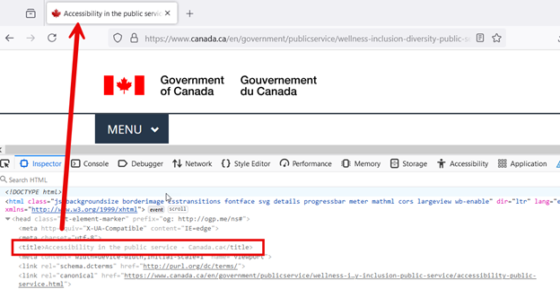
La fenêtre d’inspection des éléments met en évidence la balise de titre, qui fait référence
au titre affiché en haut de la page Web. Une flèche relie la balise HTML au titre
correspondant sur la page Web.
Le HTML sémantique a été utilisé pour mettre des balises sur la structure de la page et
représenter l’information plutôt que de s’appuyer sur des feuilles de style CSS personnalisées.
Vérifier le code pour s’assurer que les bons éléments HTML sont utilisés pour structurer le
contenu en fonction de la signification de chaque élément plutôt que de son apparence.
Exemple : Les titres devraient utiliser du HTML sémantique comme <h1> plutôt
que d’utiliser du CSS pour styliser le texte de manière à ce qu’il ressemble à un titre H1. Les
listes devraient utiliser des codes HTML sémantiques tels que <ul> et
<ol> plutôt que d’utiliser des puces pour styliser le texte et lui donner
l’apparence d’une liste.
La page comporte des titres précis et pertinents, structurés à l’aide des balises de
titre <h1> à <h6>, sans sauter de niveaux hiérarchiques.
Utilisez un vérificateur d’accessibilité automatisé tel que Accessibility Insights pour vérifier
les problèmes de hiérarchie et de structure des titres et vous assurer que les titres sont
précis et pertinents.
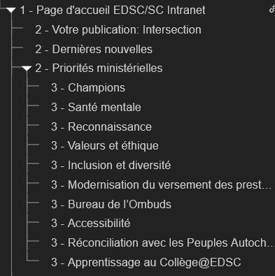
Une hiérarchie de titres bien structurée utilisant les balises <h1>,
<h2> et <h3>, représentée sous forme d'arborescence.
La page demeure fonctionnelle et lisible lorsque le texte est agrandi à 200 % de sa taille
initiale.
Faire un zoom sur la page à 200 % sur une fenêtre de 1280 px par 1024 px. Veiller à ce qu’aucun
contenu ou fonctionnalité ne soit perdu, ou qu’aucun texte ne soit coupé, tronqué ou masqué.
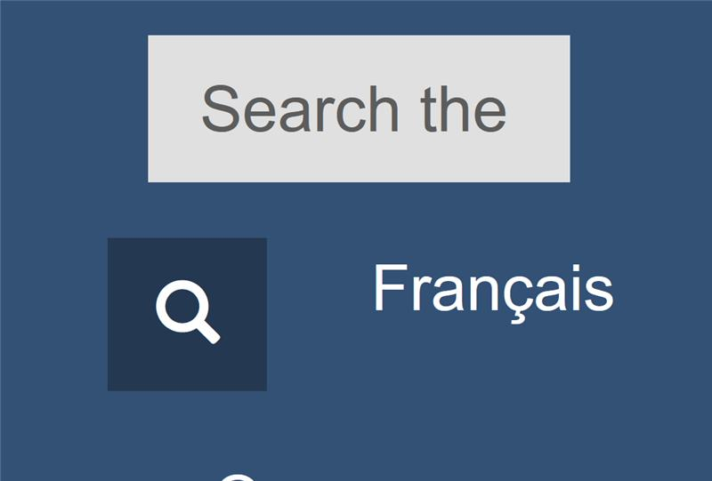
Le texte du libellé ne rentre pas dans le champ de saisie de recherche, provoquant une
troncature du texte.
La refonte du contenu de la page n’entraîne pas de perte de contenu ou de fonctionnalité et
ne nécessite pas de défilement horizontal lorsque la largeur de la fenêtre de visualisation est
fixée à 320px.
Ouvrir les outils de développement dans votre navigateur. Utiliser le mode de conception réactive
et régler la largeur de la fenêtre de visualisation à 320 px en réduisant la fenêtre du
navigateur ou en effectuant un zoom avant. Pour ce faire, à partir d’une fenêtre de 1280 px et
d’un zoom de 100 %, effectuez un zoom avant de 400 %.
Le contenu doit être présenté de manière à éviter toute perte d’information ou de fonctionnalité
avec un zoom avant et à ne pas nécessiter de défilement horizontal (à l’exception du contenu qui
requiert une mise en page bidimensionnelle, comme les diagrammes, les cartes, les jeux vidéo et
les tableaux de données).
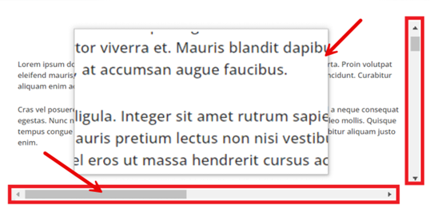
Texte agrandi avec des barres de défilement mises en évidence. Des flèches pointent vers la
barre de défilement horizontale et les bordures du contenu agrandi pour montrer la relation
entre ces éléments.
La langue principale de la page est définie à l’aide de l’attribut lang
et d’un code de langue (par exemple <html lang="en">
ou <html lang="fr">).
Vérifiez le code pour confirmer que la valeur de l’attribut lang de l’élément est
valide pour la langue dans laquelle le contenu est rédigé.
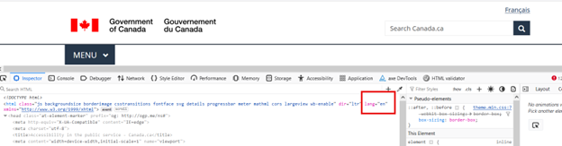
L’attribut de langue lang est mis en évidence dans la fenêtre d’inspection des
éléments, montrant qu’il s’agit d’une page en anglais avec l’attribut de langue « en »
appliqué.
Tous les éléments textuels et non textuels présentent un contraste suffisant entre les
couleurs d’avant-plan et d’arrière-plan.
Le texte et les images de texte doivent présenter un rapport de contraste d’au moins 4,5:1
par rapport à l’arrière-plan.
Les éléments non textuels doivent présenter un rapport de contraste minimal de 3:1 avec les
couleurs adjacentes.
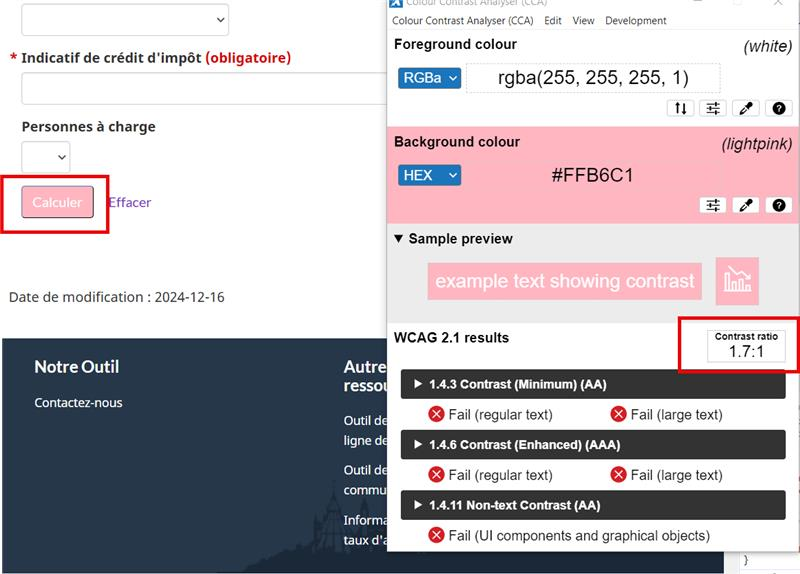
Une page où un bouton avec un fond rose et un texte blanc est mis en évidence. La
combinaison de couleurs rose et blanc est testée à l'aide d'un outil d'analyse de contraste
des couleurs, avec des alertes informant l'utilisateur que cette combinaison ne respecte pas
le ratio de contraste requis.
Les changements de langue sont balisés et ont des valeurs d’attribut
lang et d’un code de langue standard (par exemple lang="en" ou
lang="fr").
Repérer des passages ou des phrases rédigés dans une langue différente de la langue principale de
la page. Ensuite, vérifier le code pour vous assurer que tout changement de langue est marqué à
l’aide de l’attribut lang.
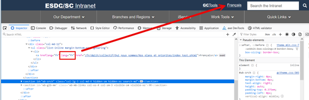
Une vue de l’inspecteur d’éléments montrant un attribut lang appliqué à une
balise spécifique, différenciant la langue principale de celle de la page Web. L’attribut
lang est mis en évidence en rouge, avec une flèche pointant vers le texte
correspondant associé à cette balise sur la page Web.
L’objectif de chaque lien peut être compris à partir de leur seul texte.
Vérifier si les étiquettes des liens donnent une idée claire du contenu auquel mène le lien.
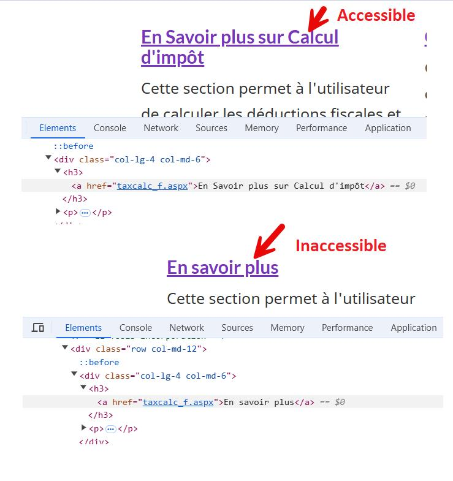
Deux exemples de textes hyperliens, avec un exemple accessible (« En savoir plus sur le
calcul d’impôt ») et un autre exemple inaccessible (« En savoir plus »). La balise de lien
de chaque texte est mise en évidence dans la fenêtre d’inspection des éléments.
Clavier
L’ordre de navigation des éléments pouvant faire l’objet d’un focus (par exemple, liens,
éléments de formulaire, boîtes de dialogue modales, etc.) est logique et intuitif, préservant la
signification et l’exploitabilité du contenu.
Naviguer dans la page en utilisant la touche Tab ou Shift + Tab pour s’assurer que l’ordre des
tabulations est cohérent par rapport au contenu de la page Web. La meilleure pratique consiste à
faire suivre l’ordre des tabulations par l’ordre de lecture de la page Web.
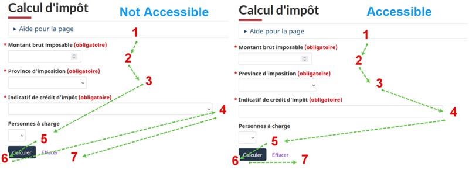
Instructions sur la structuration de l’ordre de tabulation d’une page Web. Deux
exemples sont présentés : l’un montre une séquence de tabulation accessible et logique,
tandis que l’autre présente une séquence inaccessible et désorganisée.
Tous les éléments pouvant faire l’objet d’un focus affichent un indicateur visuel
lorsqu’ils sont mis en évidence et ne disparaissent pas lors de la tabulation.
Naviguer dans la page en utilisant la touche Tab ou Shift + Tab pour vérifier que les éléments
pouvant faire l’objet d’un focus ont un indicateur clair et visible qui identifie la mise en
évidence visuelle.
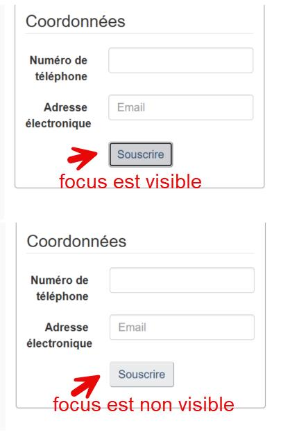
Deux exemples de boutons démontrant un principe d’accessibilité. Le premier exemple
montre un bouton dont le focus est visible lorsqu'il est ciblé, le rendant accessible. Le
deuxième exemple montre un bouton dont le focus n’est pas visible, ce qui le rend
inaccessible.
La page dispose d’une méthode accessible au clavier pour contourner le contenu répétitif.
À l’aide du clavier, vérifier s’il existe une liste de liens permettant de sauter des blocs
d’informations répétées.
Exemple : Le premier élément interactif de la page est un lien (intitulé « Aller au contenu
principal ») qui dirige l’utilisateur vers le début du contenu principal de la page Web.
L’activation du lien permet de mettre l’accent sur le contenu principal.
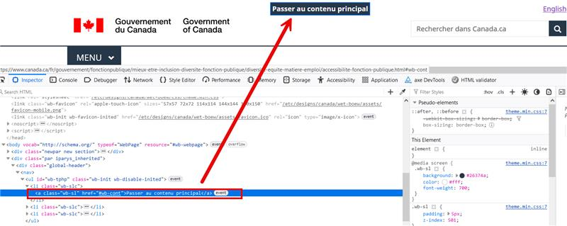
Une balise de lien est mise en évidence dans la fenêtre d’inspection des éléments,
montrant le lien « Passer au contenu principal » qui permet aux utilisateurs de passer
directement au contenu principal d’une page Web. Une flèche pointe vers le haut de la page
Web, indiquant l’emplacement de ce lien.
Un accès et un contrôle au clavier sont possibles pour tous les composants interactifs qui
peuvent être accédés et contrôlés à l’aide de la souris.
Veiller à ce que tous les éléments (par exemple, les liens, les champs de formulaire, les boutons
et les commandes des lecteurs multimédias) soient accessibles et utilisables uniquement à l’aide
du clavier.
Utilisez la touche Tab pour naviguer de manière linéaire à travers les éléments
interactifs tels que les liens, les contrôles de formulaire et les boutons.
Utilisez la touche Entrée (et parfois Espace) pour sélectionner un
élément.
Utilisez les flèches pour vous déplacer à l’intérieur de certains éléments, groupes
d’éléments et widgets, tels que les champs de sélection de formulaire, les groupes de
boutons radio et les ensembles d’onglets.
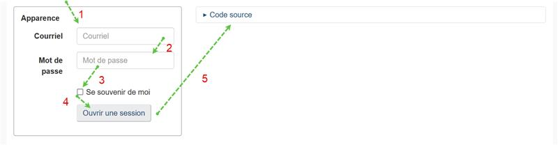
L’ordre de tabulation montre des champs qui peuvent être sélectionnés au moyen de
nombres. Des flèches montrent l’ordre dans lequel un utilisateur passera d’un champ à un
autre.
Images et multimédia
Les images informatives ont une alternative textuelle qui sert un objectif équivalent.
Vérifier dans le code si l’image possède un attribut alt. Veiller à ce que sa valeur
contienne un texte alternatif approprié qui décrit l’objectif de l’image d’une manière qui la
remplace adéquatement.
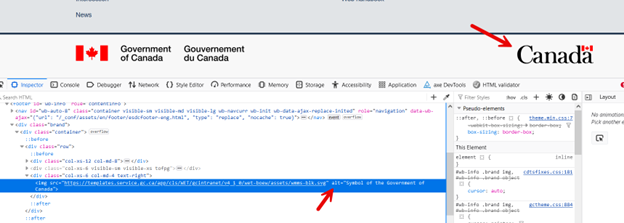
Dans la fenêtre d’inspection des éléments, une flèche pointe vers le texte alternatif d’une
image,
décrivant un symbole du Gouvernement du Canada. Cela démontre comment le texte alternatif
fournit une
description courte
et significative de l’image pour l’accessibilité.
Les images décoratives sont codées de telle manière que les lecteurs d’écran peuvent les
ignorer.
Vérifier dans le code si l’image possède un attribut alt et s’assurer que la valeur
est vide (alt="").
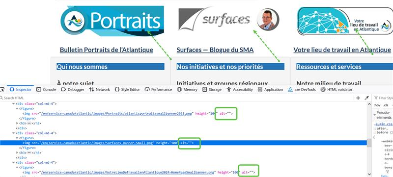
La fenêtre d’inspection des éléments affiche le code HTML de trois images décoratives. Les
parties du code
montrant que le texte alternatif de chaque image est vide ont été mises en évidence en vert.
Le contenu multimédia préenregistré (les vidéos) est sous-titré.
Vérifier que des sous-titres sont disponibles pour les contenus vidéo et audio. Ils doivent être
disponibles sous forme de sous-titres ouverts (des sous-titres qui s’affichent en permanence et
qui ne peuvent pas être désactivés) ou de sous-titres fermés. Dans le second cas, rechercher un
bouton de sous-titrage ou un moyen d’activer les sous-titres.
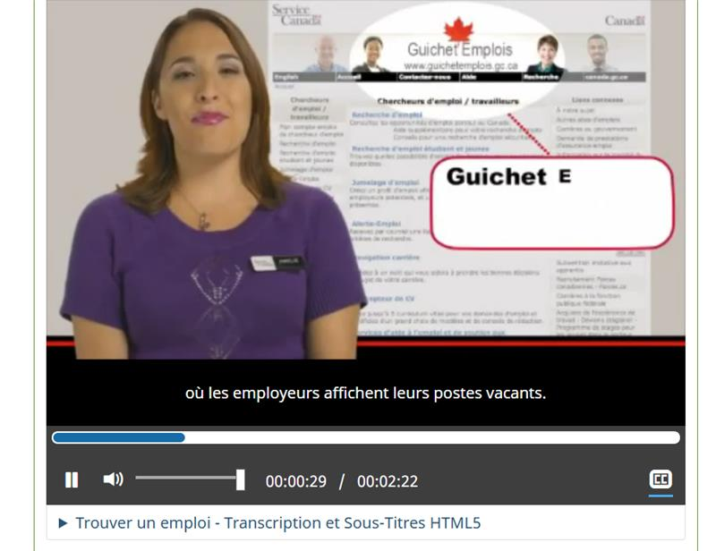
Une capture d’écran d’une vidéo affichant des sous-titres correspondant au discours de
l’hôte. L’image
montre une capture du site 'Guichet-Emplois Canada'.
Forms
Tous les éléments du formulaire (par exemple, les champs de texte, les cases à cocher, les
boutons radio, les menus déroulants, etc.) ont des étiquettes descriptives et pertinentes.
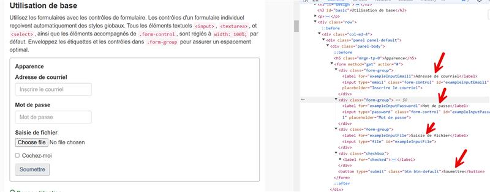
Une page de formulaire est affichée avec la fenêtre d’inspection des éléments à
droite. Des flèches pointent vers chacun des champs d’étiquettes descriptives.
Des étiquettes ou des instructions sont fournies lorsque le contenu nécessite une
intervention de l’utilisateur.
Vérifier le code pour voir si des champs sont marqués comme obligatoires. Si le symbole de
l’astérisque (*) est utilisé pour indiquer un champ obligatoire, des instructions doivent
également être fournies pour définir la signification du symbole en haut du formulaire.
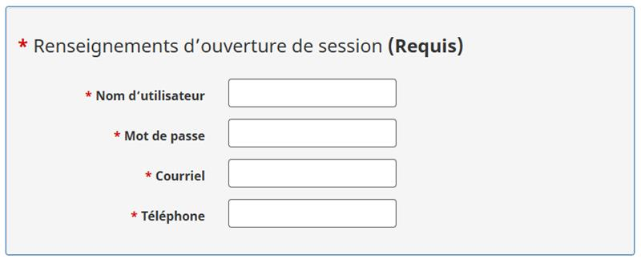
Une légende de formulaire avec une étiquette indiquant que les champs sont requis.
Des messages d’erreur indiquent clairement où le problème s’est produit (par exemple, le
nom du champ) et ce qui doit être corrigé.
Vérifier que les messages d’erreur sont faciles à comprendre et qu’ils fournissent des
instructions claires sur la manière de les résoudre.
Exemple : La mention « Veuillez saisir votre nom » n’est pas aussi utile que la mention «
Veuillez saisir votre prénom ».
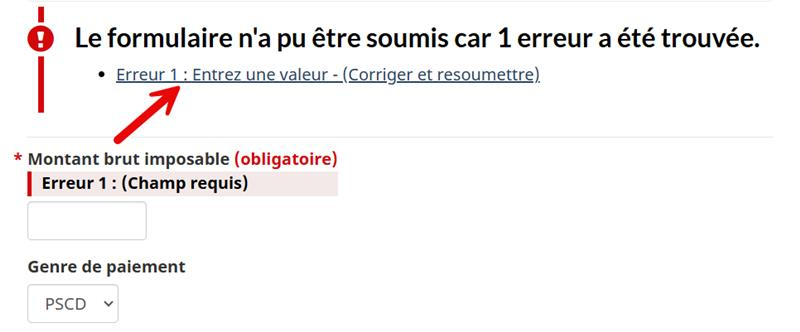
Une flèche pointe vers un message d’erreur indiquant qu’un champ ne peut pas être
vide, en demandant à l’utilisateur d’entrer une valeur. Le texte d’erreur situé au-dessus du
champ de saisie est surligné en rouge.